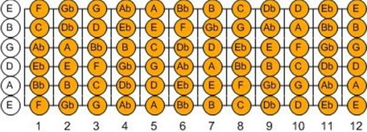

Akkoorden
|
|
|
Er bestaan heel veel verschillende akkoorden, sommige zijn makkelijk en andere heel moeilijk. Een basisakkoord
is een akkoord waarbij je 3 snaren induwt en daardoor hoor je dus ook 3 klanken door elkaar. Alle basisakkroorden
hebben ook een majeur en een mineur variant. Majeurakkoorden hebben vaak een vrolijk en opgewekt klank, deze akkoorden worden
met dezelfde naam als het basisakkoord aangeduid, dus 'C' of 'G'. Mineurakkoorden hebben daarintegen
vaak een treurige of zielige klank, deze akkoorden worden aangeduid met: Basisakkoord +m, dus 'Em' of 'Gm'.
Daarnaast heb je nog barré akkoorden, deze akkoorden zijn de eerste jaren vrij moeilijk om te spelen. Bij een barré akkoorden
moet je namelijk met je volledige wijsvinger een hele rij freds dichtduwen. Hierbij verandert de stand van de andere vingers
natuurlijk ook, hierdoor heb je vaak je pink nodig en dit kan in het begin heel onwennig voelen. Maar door veel te oefenen
kan je deze akkoorden uiteindelijk ook onder de knie krijgen.
Daarnaast krijg je met akkoorden ook nog te maken met slagritmes, als je bijvoorbeeld niet tokkelt. Slagritmes geven aan
hoe en in welk tempo je de snaren moet aanslaan. Het meeste voorkomende slagritme onder beginners is het kampvuurslagje:
D-D-U-U-D-U. Wat bekend naar beneden, beneden, omhoog, omhoog, naar beneden, omhoog. Daarnaast horen bij slagritmes ook
nog het aantal slagen per minuut, ook wel weergegeven als bpm: Beats per minute. Dit geeft het tempo
weer waarin je een bepaald slagritme moet spelen. Een metronoom kan dit tempo voor je aangeven.
|
Losse noten
Je kunt met een gitaar natuurlijk losse noten en akkoorden spelen. Losse noten klinken saaier dan een akkoord, omdat een akkoord
voller klinkt. Dit is niet zo raar, omdat je met je linker hand ook meer snaren ingedrukt moet houden. Met een akkoord kun
je mensen makkelijker begeleiden, dan met losse noten.
Hieronder staat een afbeelding van je hals van je gitaar. Je ziet de snaren met daarop per fred weergegeven welke noot je
hoort als je je vinger op die toets zou leggen en de snaar zou aanslaan. Een kort toelichting op de afkortingen van de noten.
Als een een noot staat met een 'b' erachter, spreek je die noot uit als (letter van de noot)+es. Behalve als je de noot
E hebt, dan heet het een 'es'. Als er een b achterstaan betekent dat eigenlijk dat de toon een halvee toon lager
klinkt als de originele noot.
